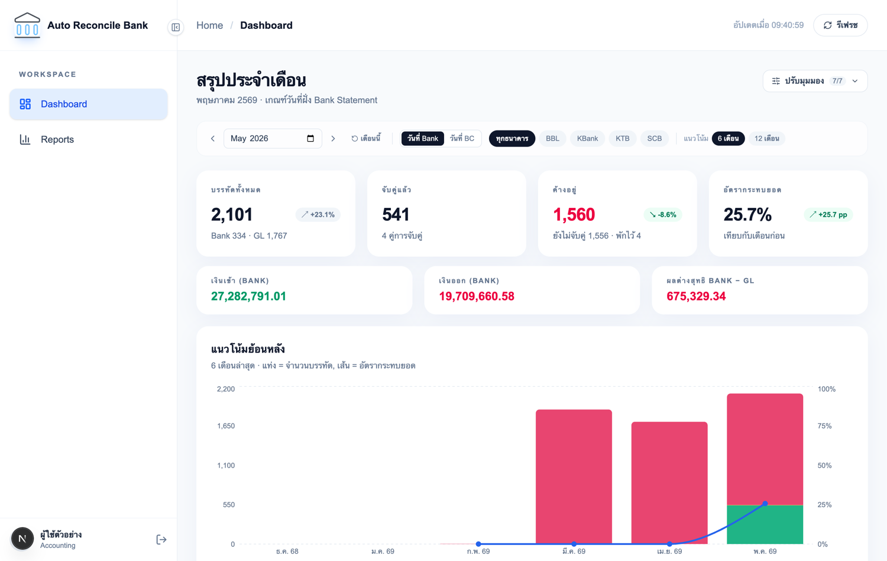
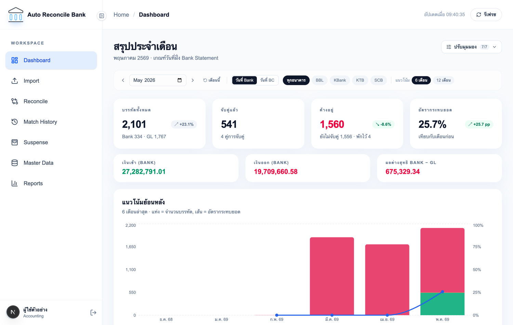
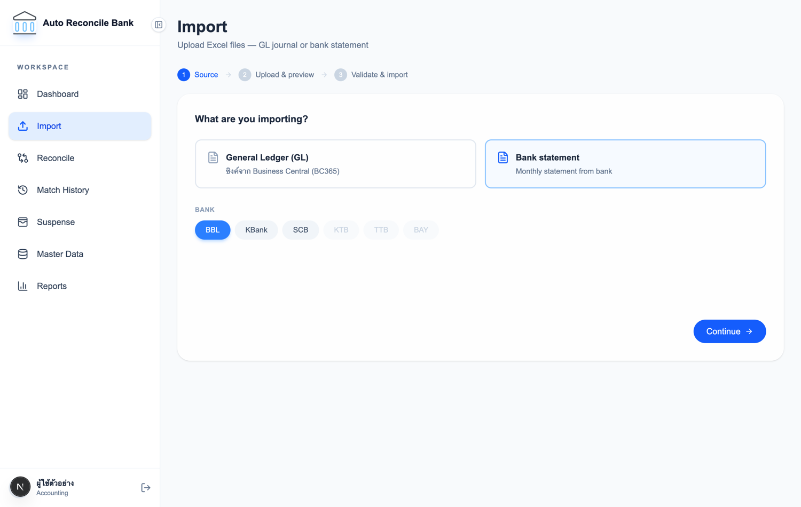
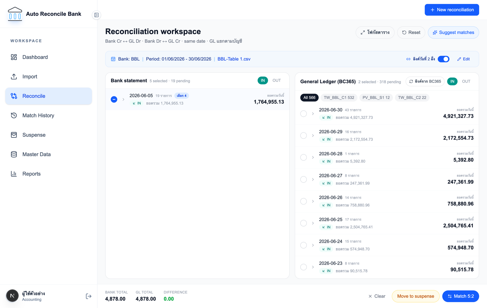
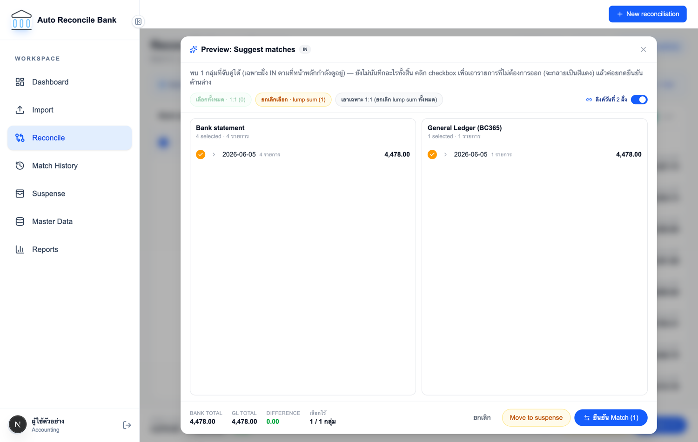
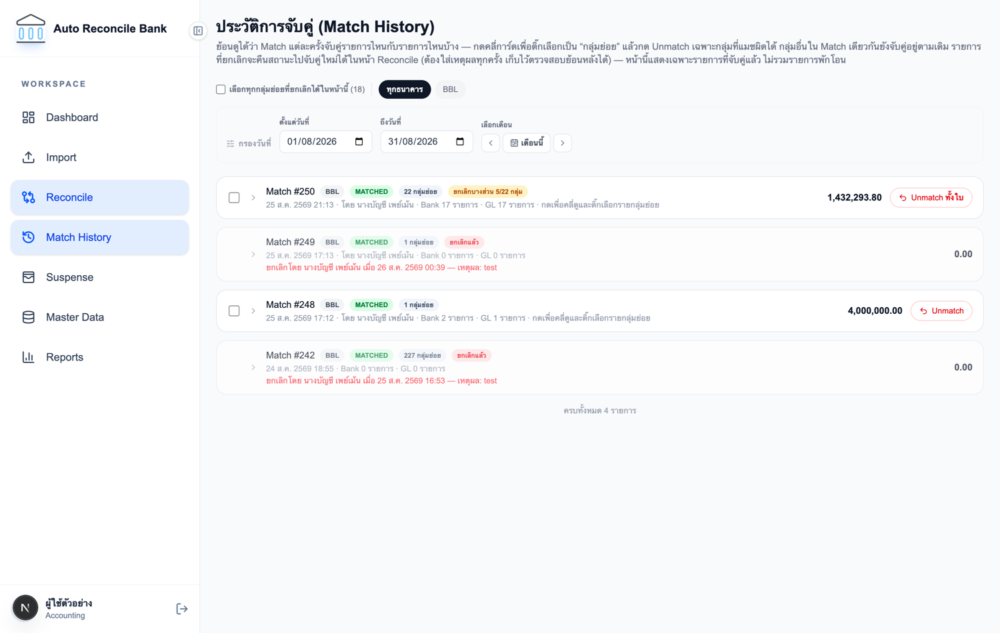
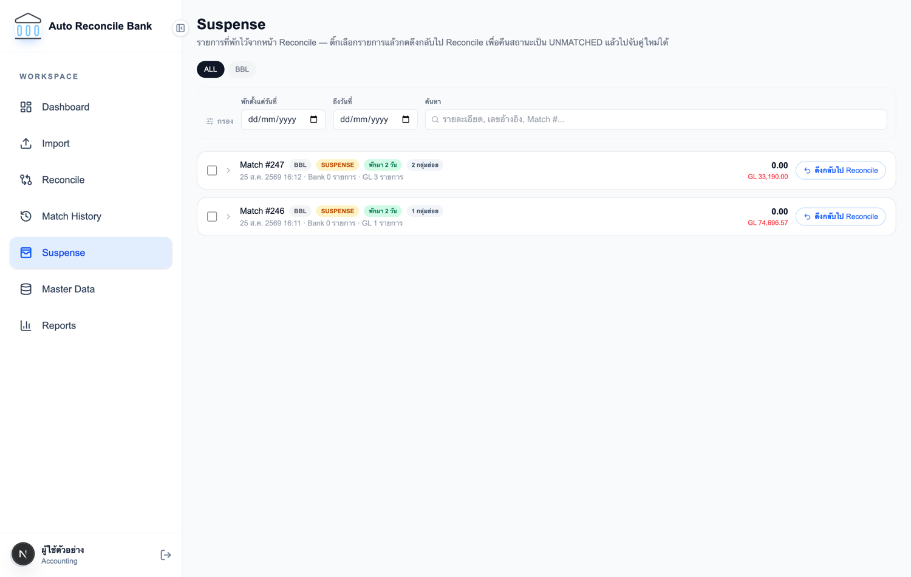
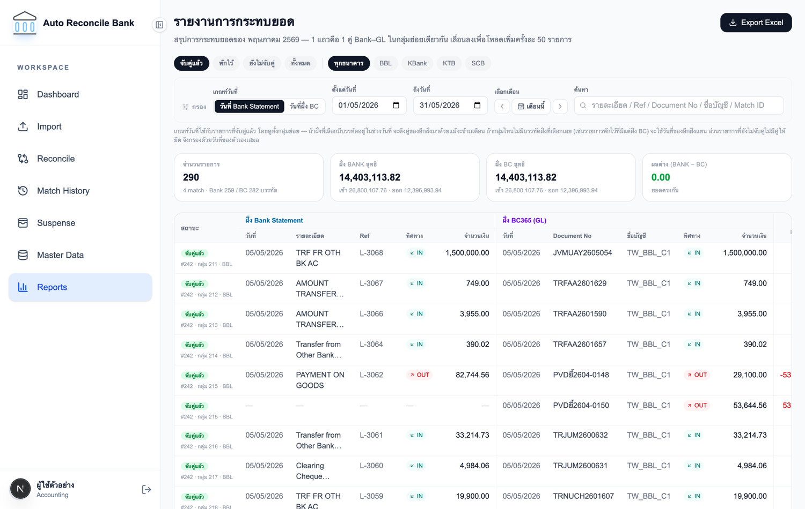
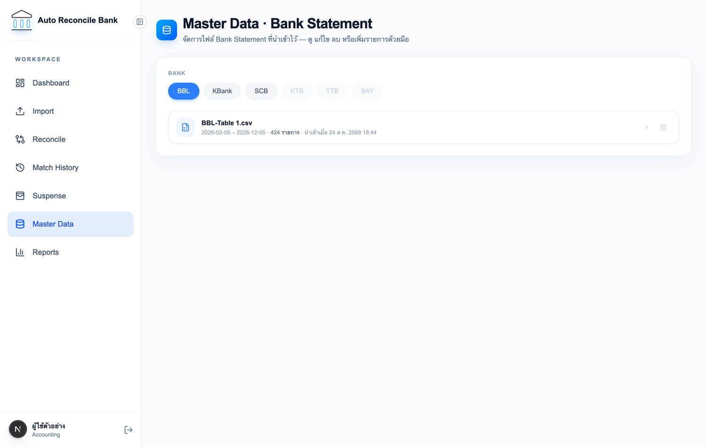

คู่มือฉบับย่อ · อ่าน 10 นาที
Auto Reconcile Bank
ระบบกระทบยอดเงินฝากธนาคารกับบัญชีแยกประเภท
ระบบนี้ทำอะไร
ทุกสิ้นเดือนเราต้องเทียบว่า เงินที่เข้า–ออกจริงในบัญชีธนาคาร ตรงกับ รายการที่บันทึกไว้ในระบบบัญชี BC365 หรือไม่
ระบบนี้ทำให้งานนั้นเป็นดิจิทัลทั้งหมด — เอาข้อมูล 2 ฝั่งมาวางเทียบกัน ช่วยหาคู่ที่ตรงกันให้อัตโนมัติ
บันทึกว่าใครจับคู่อะไรเมื่อไร และออกรายงานให้พร้อมปิดงวด
คำศัพท์ 5 คำที่ต้องรู้ก่อนเริ่ม
IN / OUT
IN = เงินเข้าบัญชี · OUT = เงินออกจากบัญชี ระบบจับคู่เฉพาะรายการทิศทางเดียวกันและวันเดียวกันเท่านั้น
UNMATCHED
ยังไม่ถูกจับคู่ — คืองานที่เหลือให้เราทำ
MATCHED
จับคู่เรียบร้อยแล้ว มีบันทึกว่าใครทำ เมื่อไร
SUSPENSE
พักไว้ก่อน — ยังหาคู่ไม่เจอ แต่ไม่อยากปล่อยค้าง ดึงกลับมาจับคู่ใหม่ได้ทุกเมื่อ
กลุ่มย่อย
ชุดรายการที่ยอด 2 ฝั่งเท่ากันพอดี เช่น ธนาคาร 1 รายการ = BC365 3 รายการ ถือเป็น 1 กลุ่มย่อย
กฎเหล็กข้อเดียวที่ต้องจำ
ระบบจะให้กดปุ่ม Match ได้ก็ต่อเมื่อ ยอดรวม 2 ฝั่งเท่ากันพอดี (DIFFERENCE = 0.00) เท่านั้น
ถ้าตัวเลขยังไม่เป็น 0.00 สีเขียว ปุ่มจะกดไม่ได้ — ไม่ต้องกังวลว่าจะจับคู่ผิดโดยไม่รู้ตัว
1
ภาพรวม: งานประจำเดือนมี 5 ขั้น
ขั้นที่ 1
นำเข้า Statement
อัปโหลดไฟล์จากธนาคารที่หน้า Import
ขั้นที่ 2
ซิงค์ข้อมูล BC365
กดปุ่มเดียว ดึงรายการบัญชีล่าสุดมา
ขั้นที่ 3
จับคู่รายการ
งานหลัก ทำที่หน้า Reconcile
ขั้นที่ 4
พักรายการที่เหลือ
ตัวที่หาคู่ไม่ได้ ส่งเข้าบัญชีพักโอน
ขั้นที่ 5
ออกรายงาน
ดูผลและส่งออก Excel
สิทธิ์การใช้งาน — คุณเห็นเมนูไม่เท่ากัน
ระบบแบ่งผู้ใช้เป็น 2 กลุ่ม เมนูด้านซ้ายจะแสดงเฉพาะสิ่งที่คุณมีสิทธิ์ใช้
| เมนู | Accountant (Admin) | ผู้ใช้งานทั่วไป (User) |
|---|
| Dashboard — สรุปประจำเดือน | ใช้ได้ | ใช้ได้ |
| Reports — รายงาน & Export Excel | ใช้ได้ | ใช้ได้ |
| Import — นำเข้าไฟล์ / ซิงค์ | ใช้ได้ | ไม่เห็นเมนู |
| Reconcile — จับคู่รายการ | ใช้ได้ | ไม่เห็นเมนู |
| Match History — ประวัติการจับคู่ | ใช้ได้ | ไม่เห็นเมนู |
| Suspense — บัญชีพักโอน | ใช้ได้ | ไม่เห็นเมนู |
| Master Data — จัดการไฟล์ | ใช้ได้ | ไม่เห็นเมนู |

สิ่งที่ ผู้ใช้งานทั่วไป (User) เห็น — เมนูซ้ายมีแค่ Dashboard กับ Reports
ถ้าหาเมนูที่ต้องการไม่เจอ
ไม่ใช่ระบบเสีย — แปลว่าบัญชีของคุณยังไม่ได้รับสิทธิ์นั้น ติดต่อผู้ดูแลระบบเพื่อขอเปลี่ยนสิทธิ์
(การพิมพ์ URL เข้าตรงๆ ก็เข้าไม่ได้ ระบบจะพากลับหน้าแรกให้)
2
เข้าสู่ระบบ
ขั้นตอน
- กรอก Username และ Password ชุดเดียวกับระบบกลางของบริษัท
- กดไอคอน รูปตา ถ้าอยากเห็นรหัสผ่านที่พิมพ์
- กด Sign in → เข้าหน้า Dashboard ทันที
ไม่ใช้งาน 30 นาที ระบบออกให้อัตโนมัติ
งานที่กด Match ไปแล้วอยู่ครบ ไม่หาย แต่ช่วงวันที่ที่ตั้งค่าไว้ในหน้า Reconcile จะถูกล้าง ต้องตั้งใหม่
ถ้าเข้าไม่ได้
“username หรือรหัสผ่านไม่ถูกต้อง” = พิมพ์ผิด
“ไม่มีสิทธิ์ใช้งานโปรแกรมนี้” = ยังไม่ได้รับสิทธิ์ ติดต่อผู้ดูแลระบบ
3
Dashboard — ดูว่าเดือนนี้ไปถึงไหนแล้ว

อ่านการ์ด 4 ใบนี้ก็พอ
บรรทัดทั้งหมด
รายการทั้ง 2 ฝั่งรวมกันในเดือนนี้
จับคู่แล้ว
ทำไปได้เท่าไรแล้ว
ค้างอยู่
งานที่ยังเหลือ — ตัวเลขนี้ควรลดลงเรื่อยๆ
อัตรากระทบยอด
คิดเป็น % ยิ่งใกล้ 100% ยิ่งดี
ปุ่มที่ใช้บ่อย
- ‹ › และช่องเดือน — เปลี่ยนเดือนที่ดู
- วันที่ Bank / วันที่ BC — เลือกว่าจะยึดวันที่ฝั่งไหนเป็นเกณฑ์
- ปุ่มชื่อธนาคาร — ดูเฉพาะธนาคารนั้น
- รีเฟรช — ดึงตัวเลขล่าสุด ใช้หลังเพิ่งจับคู่เสร็จ
- ปรับมุมมอง — เลือกว่าจะแสดงกราฟส่วนไหนบ้าง (ระบบจำค่าไว้ให้)
4
Import — เอาข้อมูลเข้าระบบ
เฉพาะ Admin
ต้องทำ 2 อย่างก่อนเริ่มจับคู่ คือ อัปโหลดไฟล์ธนาคาร และซิงค์ข้อมูลฝั่ง BC365

ก. อัปโหลดไฟล์ Bank Statement
- เลือกการ์ด Bank statement แล้วเลือกธนาคารให้ถูก (BBL / KBank / SCB)
- กด Continue → ลากไฟล์ .xlsx .xls .csv มาวาง หรือคลิกเลือกไฟล์
- ระบบแสดงตัวอย่าง 5 แถวแรกให้ตรวจ — ยังไม่บันทึกอะไรลงระบบ
- ตรวจแล้วโอเค กด Map columns → Import เพื่อบันทึกจริง
เลือกธนาคารผิด = ข้อมูลเพี้ยนทั้งไฟล์
เพราะแต่ละธนาคารวางคอลัมน์ไม่เหมือนกัน ระบบอ่านตามธนาคารที่คุณเลือก ถ้าเลือกผิดจะขึ้นว่าอ่านไฟล์ไม่ได้ หรือได้ข้อมูลผิด
อัปโหลดไฟล์เดิมซ้ำไม่ได้ (และนั่นเป็นเรื่องดี)
ระบบจำ “ลายนิ้วมือ” ของทุกไฟล์ที่เคยนำเข้า ถ้าเป็นไฟล์เดิมจะเตือนและปิดปุ่ม Import ให้ — กันข้อมูลซ้ำโดยไม่ตั้งใจ
ถ้าต้องการนำเข้าใหม่จริงๆ ให้ไปลบชุดเดิมที่หน้า Master Data ก่อน
ข. ซิงค์ข้อมูลจาก BC365
- เลือกการ์ด General Ledger (GL) แล้วกด ซิงค์ GL ทั้งหมด — ดึงย้อนหลังทั้งชุด ใช้เวลานาน เหมาะกับตอนตั้งระบบใหม่หรือย้อนทำเดือนเก่า
- งานประจำเดือนปกติ ให้ใช้ปุ่ม ซิงค์จาก BC365 ที่หน้า Reconcile แทน — ดึงแค่ 40 วันล่าสุด เร็วกว่ามาก
ข้อมูล BC365 มาจากไหน
ระบบไม่ได้ต่อกับ BC365 ตรงๆ แต่สั่งให้ระบบกลางของบริษัท (TRW Data Center API) ไปดึงมาให้แล้วเขียนลงฐานข้อมูล
เราจึงแค่ “กดสั่ง” แล้วรอ — ถ้าขึ้นว่าเชื่อมต่อไม่ได้ ให้แจ้งฝ่าย IT
5
Reconcile — หน้าจับคู่ (หัวใจของระบบ)
เฉพาะ Admin
เริ่มด้วยการกด New reconciliation เลือกธนาคารและช่วงวันที่ที่จะทำ แล้วระบบจะดึงเฉพาะรายการที่ยังค้างของทั้ง 2 ฝั่งมาวางเทียบกัน

ซ้าย = Bank statement · ขวา = General Ledger (BC365) · แถบล่าง = ยอดรวมและปุ่มบันทึก
วิธีจับคู่ทีละคู่
- เลือก IN หรือ OUT ก่อน (เปลี่ยนพร้อมกันทั้ง 2 ฝั่ง)
- คลิก แถววันที่ เพื่อคลี่ดูรายการย่อย
- ติ๊กวงกลมหน้ารายการที่ต้องการทั้ง 2 ฝั่ง
- ดู DIFFERENCE ที่แถบล่าง — ต้องเป็น 0.00 สีเขียว
- กด Match → บันทึกทันที
ตัวช่วยที่ควรใช้
- วงกลมสีเขียว = ระบบตรวจแล้วว่าวันนั้นยอด 2 ฝั่งตรงกันพอดี และติ๊กไว้ให้ล่วงหน้าแล้ว แค่ตรวจแล้วกด Match
- ป้ายสี “กลุ่ม 1, 2, 3” = สีเดียวกันคือคู่กัน ใช้ไล่สายตาได้เร็ว
- ลิงค์วันที่ 2 ฝั่ง = เปิดไว้ คลี่ฝั่งหนึ่งอีกฝั่งคลี่ตามให้
- โฟกัสตาราง = ซ่อนส่วนอื่น ให้ตารางใหญ่ขึ้น
- ซิงค์จาก BC365 = ใช้เมื่อเพิ่งไปแก้ข้อมูลใน BC365 มา
Move to suspense ส่งเฉพาะฝั่ง BC365 เท่านั้น
ต่อให้ติ๊กฝั่งธนาคารไว้ด้วยก็ไม่ถูกส่งไป เพราะ Bank Statement คือหลักฐานจากธนาคาร ห้ามแก้ไขหรือพักไว้
6
Suggest matches — ให้ระบบหาคู่ให้
เฉพาะ Admin
แทนที่จะไล่ติ๊กเอง กดปุ่มเดียวให้ระบบหาชุดที่ยอดตรงกันพอดีมาเสนอ แล้วเราแค่ตรวจ

ทุกกลุ่มถูกติ๊กไว้ให้แล้ว — หน้านี้ ยังไม่บันทึกอะไรลงระบบ จนกว่าจะกดยืนยัน
อ่านสีให้เป็น
เขียว
คู่แบบ 1:1 ตรงตัว มั่นใจได้สูง
เหลือง
แบบยอดรวม (lump sum) เช่น 1 ต่อหลายรายการ — ควรตรวจก่อน
แดง ✕
กลุ่มที่คุณเอาออกแล้ว จะไม่ถูกบันทึก
ขั้นตอน
- ดูรายการที่ระบบเสนอ
- กดวงกลมของกลุ่มที่ไม่ต้องการ ให้กลายเป็นสีแดง
- ถ้าอยากเอาเฉพาะที่ชัวร์ กด เอาเฉพาะ 1:1
- กด ยืนยัน Match → บันทึกทุกกลุ่มที่ยังติ๊กอยู่
กดผิดไม่เสียหาย ถ้ายังไม่กดยืนยัน กด ยกเลิก ได้เลย ไม่มีอะไรถูกบันทึก
ถ้าขึ้นว่า “ไม่พบรายการที่จับคู่กันได้แบบชัดเจน”
แปลว่าในทิศทาง (IN/OUT) และช่วงวันที่ที่ดูอยู่ ไม่มีคู่ที่ระบบมั่นใจพอ — ลองสลับ IN ↔ OUT หรือจับคู่เองจากตารางหลัก
7
Match History — ตรวจย้อนหลัง & แก้ที่จับผิด
เฉพาะ Admin

- ค่าเริ่มต้นแสดงเดือนปัจจุบัน — ถ้าหาของเดือนก่อนไม่เจอ ให้เลื่อนเดือนด้วยปุ่ม ‹ ›
- คลิกการ์ดเพื่อคลี่ดูกลุ่มย่อยว่าจับรายการไหนกับรายการไหน
- จับผิดเฉพาะบางกลุ่ม → กด Unmatch กลุ่มนี้ เฉพาะกลุ่มนั้น กลุ่มอื่นยังอยู่เหมือนเดิม
- ผิดทั้งใบ → กด Unmatch ทั้งใบ
- ทุกครั้งต้องกรอกเหตุผล ไม่กรอกปุ่มยืนยันจะกดไม่ได้
ยกเลิกแล้วประวัติไม่หาย
ระบบเก็บไว้ว่าเคยจับคู่อะไรกับอะไร แล้วติดป้าย ยกเลิกแล้ว พร้อมชื่อผู้ยกเลิก เวลา และเหตุผล
ส่วนรายการจะกลับไปเป็น UNMATCHED ให้จับคู่ใหม่ได้ที่หน้า Reconcile
8
Suspense — บัญชีพักโอน
เฉพาะ Admin

- รวมรายการที่กด Move to suspense ไว้จากหน้า Reconcile
- ป้าย พักมา n วัน บอกอายุ — ยิ่งนานยิ่งควรรีบเคลียร์
- ติ๊กเลือกรายการ → แถบดำจะลอยขึ้นมาด้านล่าง → กด ดึงกลับไป Reconcile
- ยืนยันแล้วรายการจะกลับเป็น UNMATCHED พร้อมให้จับคู่ใหม่
9
Reports — ออกรายงาน & Excel
ทุกคนใช้ได้

- 1 แถว = 1 คู่ Bank–BC365 วางเทียบกันซ้าย–ขวา ช่องขีด — คือฝั่งนั้นไม่มีคู่
- เลือกสถานะที่จะดู: จับคู่แล้ว / พักไว้ / ยังไม่จับคู่ / ทั้งหมด (ค่าเริ่มต้นคือ “จับคู่แล้ว”)
- ตั้งช่วงวันที่ หรือใช้ปุ่ม ‹ เดือนนี้ › · กรองธนาคาร · ค้นจากรายละเอียด/Ref/เลขเอกสาร
- การ์ด ผลต่าง (BANK − BC) — เขียว = ยอดตรงกัน · แดง = ยังไม่ตรง
- เลื่อนลงจนสุด ระบบโหลดเพิ่มให้เองครั้งละ 50 รายการ
- Export Excel = ได้ทั้งชุดตามตัวกรองที่ตั้งไว้ ไม่ใช่แค่แถวที่เห็นบนจอ
10
Master Data — แก้ข้อมูลที่นำเข้าผิด
เฉพาะ Admin

- ดูไฟล์ที่เคยนำเข้าของแต่ละธนาคาร คลิกชื่อไฟล์เพื่อดูรายบรรทัด
- แก้ไข (ดินสอ) · ลบ (ถังขยะ) · เพิ่มรายการที่ตกหล่นด้วยมือ (+ เพิ่มรายการ)
- เจอ ไอคอนแม่กุญแจ = แถวนั้นจับคู่ไปแล้ว แก้ไม่ได้ ต้องไป Unmatch ก่อน
การลบไฟล์ทั้งชุดย้อนกลับไม่ได้ และถ้ามีรายการในไฟล์ถูกจับคู่ไปแล้ว ระบบจะไม่ยอมให้ลบ
11
สรุปไว้ข้างจอ
เจอปัญหาแบบนี้ ทำอย่างไร
| อาการ | สาเหตุและวิธีแก้ |
|---|
| ปุ่ม Match กดไม่ได้ (สีจาง) | ยังไม่ได้เลือกฝั่งใดฝั่งหนึ่ง หรือ DIFFERENCE ยังไม่เป็น 0.00 — ดูตัวเลขที่แถบล่าง |
| ปุ่ม Move to suspense กดไม่ได้ | ต้องเลือกรายการฝั่ง BC365 อย่างน้อย 1 รายการ (ฝั่งธนาคารอย่างเดียวพักไม่ได้) |
| รายการฝั่ง BC365 ไม่ครบ | กด ซิงค์จาก BC365 ที่หน้า Reconcile (40 วันล่าสุด) ถ้าต้องย้อนไกลกว่านั้นใช้ ซิงค์ GL ทั้งหมด ที่หน้า Import |
| อัปโหลดแล้วปุ่ม Import กดไม่ได้ | ไฟล์นี้เคยนำเข้าแล้ว — ไปลบชุดเดิมที่ Master Data ก่อน |
| แก้ไขรายการไม่ได้ (แม่กุญแจ) | รายการถูกจับคู่แล้ว ต้อง Unmatch ที่ Match History ก่อน |
| Suggest matches ไม่เจออะไรเลย | ในทิศทางและช่วงวันที่นี้ไม่มีคู่ที่ชัดเจน — สลับ IN ↔ OUT หรือจับคู่เอง |
| หา Match ของเดือนก่อนไม่เจอ | Match History เริ่มที่เดือนปัจจุบัน เลื่อนเดือนด้วยปุ่ม ‹ › |
| รายงานว่างเปล่า | ตรวจช่วงวันที่ สถานะที่เลือก (เริ่มต้นคือ “จับคู่แล้ว”) และเกณฑ์วันที่ Bank/BC |
| ไม่เห็นเมนูที่ต้องการ | บัญชีของคุณไม่มีสิทธิ์นั้น ติดต่อผู้ดูแลระบบ |
| “เชื่อมต่อ server ไม่ได้” | ปัญหาเครือข่าย แจ้งฝ่าย IT พร้อมภาพหน้าจอและเวลาที่เกิด |
สิ่งที่ต้องระวัง 5 ข้อ
- เลือกธนาคารให้ถูกก่อนอัปโหลด — เลือกผิดอ่านข้อมูลผิดทั้งไฟล์
- กด Match แล้วมีผลทันที ไม่มีการบันทึกร่าง — ถ้าผิดต้องไป Unmatch พร้อมระบุเหตุผล
- ข้อมูล BC365 แก้ในระบบนี้ไม่ได้ ต้องไปแก้ที่ BC365 แล้วกดซิงค์ใหม่
- Bank Statement ห้ามพัก ห้ามแก้ ถ้าถูกจับคู่ไปแล้ว
- เขียนเหตุผลตอน Unmatch ให้คนอื่นอ่านรู้เรื่อง เพราะเป็นหลักฐานเดียวที่ผู้ตรวจสอบจะเห็นย้อนหลัง
ต้องการรายละเอียดมากกว่านี้
ดูคู่มือฉบับเต็ม (อธิบายทุกปุ่มทีละตัว) และเอกสารประกอบโครงการ (สถาปัตยกรรม ฐานข้อมูล API) ได้ที่โฟลเดอร์เอกสารของระบบ